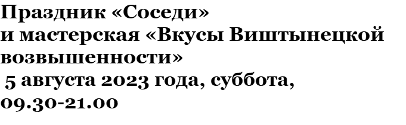
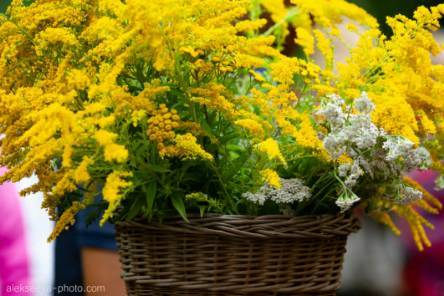
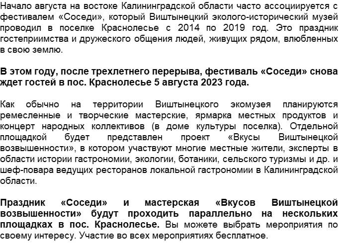
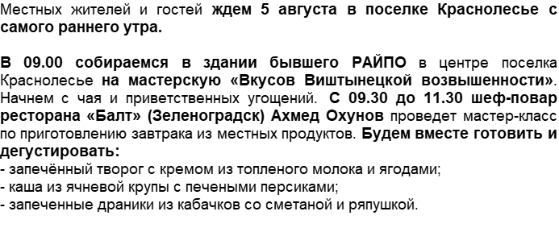

|
12:00 - 12:15
|
Открытие праздника «Соседи»
Выступление ансамбля «Подруги», пос. Гаврилово, руководитель Светлана Никирина Площадка: Виштынецкий эколого-исторический музей, пос. Краснолесье, ул. Школьная, 5а |
|||
|
12:15 - 18:00
|
Ярмарка и угощения от местных жителей (территория музея):
Зелёная лавка Любови Васильевны Сутягиной, пос. Краснолесье
«Пугачёвская перепёлочка», Михаил и Ольга Жевнеровичи из посёлка Пугачёво
Усадьба Марины Дмитриевны Рюмкиной, пос. Краснолесье
Усадьба Веры Матусевич, пос. Краснолесье
Усадьба Ольги Владимировны Осиповой
«Лисичкин пряничек» Лены Уфимцевой из Краснолесья
Домашнее подворье семьи Абраменко, Александр и Светлана, пос. Чистые Пруды
Семейное подворье семьи Крикун "Сим-да-Иля"
Самовары Павла Качнова и его семьи, г. Гусев
«Янтарный солод» от Анны Изенковой
Площадка проекта «Вкусы Виштынецкой возвышенности»:
Деревенский стрит-фуд от ресторана «Балт» (Зеленоградск)
Шюпинис на костре от сельской усадьбы семьи Добровольских, Наталья и Александр, пос. Дмитриевка
|
Работа открытых мастерских (территория музея):
Мастер-класс «Лесной сувенир» от семьи Уфимцевых Мастерская по коже Людмилы Алексеевны Кочуковой Мастер-класс «Куколки-обереги», Надежда и Тереза Мастерская по изготовлению изделий в технике "Макраме", Галина Филина Мастерская по пошиву сумок, Катаева Татьяна Мастерская по изготовлению украшений с коллекцией из жемчуга, Нятина Ольга Мастерская по изготовлению украшений из натурального камня, Наталья Чавычалова. Мастерская по изготовлению украшений из натурального камня, Евгения Мартынова Мастерская «Хранители времени», Валерий Гусаров и Сергей Проскуркин Мастерская изделий из атласных лент, Екатерина Крек Мастерская по деревянной игрушке, Юрий Валентинович Касьяненко |
Лекционная программа от проекта «Вкусы Виштынецкой возвышенности»
(конференц-зал музея): 13.30 – 14.15 Рассказ «Почему нужно есть местные продукты?» Лариса Станченко, географ 14.45 – 15.30 Рассказ «Что полезного собираем и едим в августе?» Алексей Соколов, директор Виштынецкого эколого-исторического музея 16.00 – 16.45 Рассказ «Золотые розги на десерт: инвазивные виды растений в кулинарии» Мария Кохановская, эколог 17.00 – 17.20 Рассказ о подготовке книги «Вкусы Виштынецкой возвышенности» Юлия Бардун, Наталья Добровольская – организаторы проекта «Вкусы Виштынецкой возвышенности» |
12:30 - 13:30
Авторская экскурсия директора Виштынецкого эколого-исторического музея Алексея Соколова по экспозиции музея ________________________ 13:00 – 17:00 Концертная программа творческой мастерской «Поющие поколения», организатор Ирина Ковардо (площадка дома культуры посёлка Краснолесье) ________________________ 14:30-16:30 Познавательное путешествие по окрестностям посёлка Краснолесье к родникам в истоки реки Синей с Александром Дорошкиным (сбор участников у входа в музей). Добровольный взнос – рекомендуемая сумма – 150 руб. с человека. |
|
19:00-21:00
|
Показ фильма «Клуб любителей книг и пирогов из картофельных очистков» (2018 г.)
Площадка: Краснолесенский сельский дом культуры, пос. Краснолесье, ул. Центральная, д. 2 |
|||


Контакты: https://vk.com/tastes_of_vistynets , https://t.me/tastes_of_vistynets